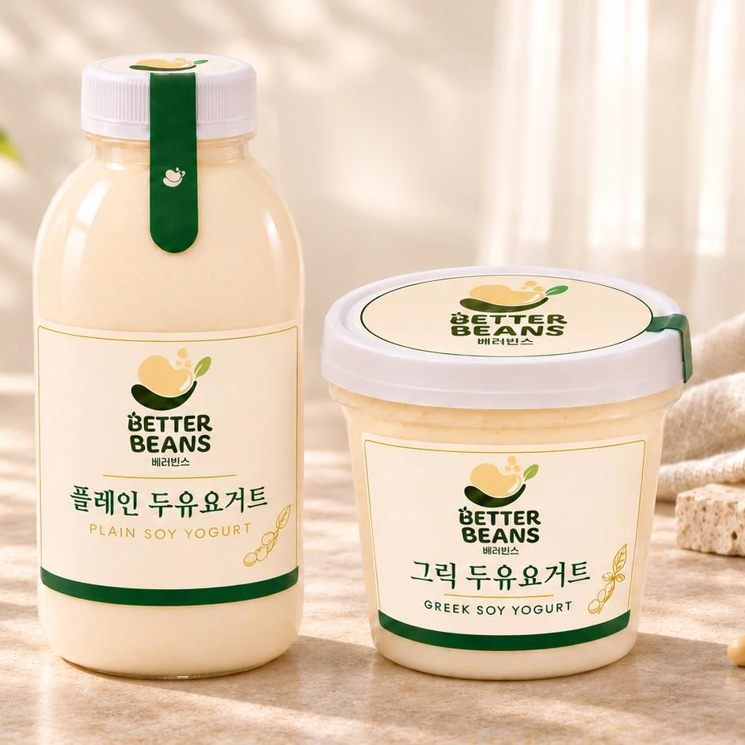
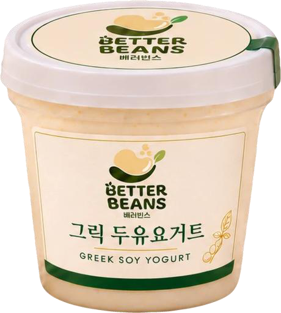
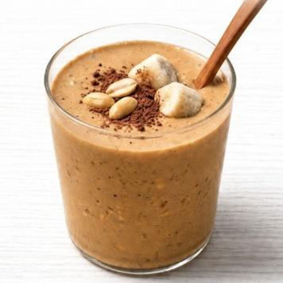
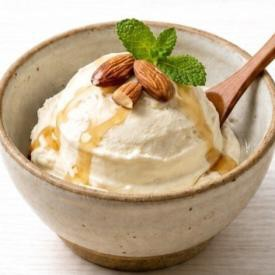
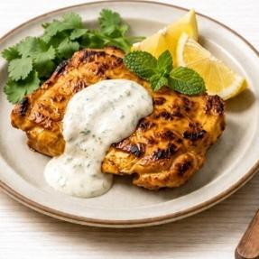
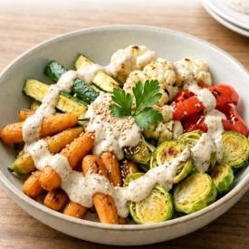
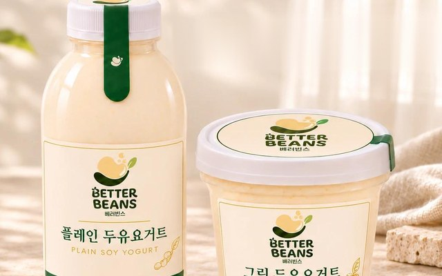
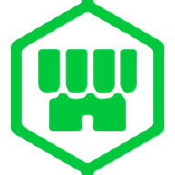

원재료명이 두 가지에서 끝납니다
원재료명
두유, 유산균.
제품 표시 사항 — 두유(고형분 10% 이상, 대두-외국산(미국, 캐나다, 호주 등)), 유산균
요거트를 고를 때 원재료명부터 읽는 분들이 있습니다. 베러빈스는 그 줄을 가장 짧게 만들었습니다.
두유와 유산균 외에는 아무것도 넣지 않습니다. 원재료를 줄이면서도 맛과 식감은 그대로 지키는 것, 그것이 베러빈스가 풀고 있는 숙제입니다.
넣지 않는 원료
- 당류
- 향료
- 증점제
플레인과 그릭,
두 가지로 만듭니다
같은 원재료로 농도만 달리했습니다. 가볍게 즐기려면 플레인, 꾸덕한 맛을 원하면 그릭을 고르세요.

단맛도 향도 더하지 않아, 어디에나 어울립니다
그대로 먹어도 좋고, 내 방식대로 바꿔 먹어도 좋습니다.
음료

스무디로 갈아서
과일이나 견과와 함께 갈아 보세요. 단맛을 더하지 않은 요거트라 재료 맛이 또렷하게 납니다.
아침
그래놀라 볼로
그래놀라와 과일을 올리면 든든한 한 그릇이 됩니다. 바쁜 아침에 잘 어울립니다.
디저트

아이스크림처럼
한 스쿱 떠서 견과를 올리면 가벼운 디저트가 됩니다. 달지 않아 끝맛이 깔끔합니다.
구이 요리

탄두리 치킨에 곁들여
향신료가 강한 구이 요리에 소스처럼 얹어 보세요. 산뜻한 신맛이 맛을 정리해 줍니다.
채소 요리

구운 채소 드레싱으로
구운 채소 위에 드레싱처럼 뿌려 보세요. 고소한 맛이 채소의 단맛을 받쳐 줍니다.
무첨가의 비결은
국내에서 개발한 복합 종균입니다
첨가물 없이 맛과 질감을 내려면 발효가 제 몫을 다해야 합니다. 베러빈스는 임소영 대표가 연구개발에 직접 참여한 복합 종균으로 발효합니다.
- 적당한 신맛과도한 산미를 줄였습니다
- 고소하고 크리미함부드러운 조직감을 냅니다
- 콩 비린 향 저감무첨가의 가장 큰 과제입니다
2027년 2월, 온라인에서 먼저 만납니다
지금은 제품을 마무리하는 단계입니다. 준비가 끝나는 대로 온라인 판매를 시작합니다.
-
이름과 로고를 만들고, 작업장과 용기를 마련했습니다.
- 브랜드 이름과 로고 제작
- 상표 출원
- 천안 작업장 계약과 인테리어
- 용기 선정과 주문
-
검사와 등록을 마치고, 판매할 제품을 완성합니다.
- 영업 등록과 사업자 등록
- 자가품질검사, 영양성분검사
- 라벨 스티커 제작
- 체험단 모집, 프리마켓 참여
-
온라인 채널에서 플레인과 그릭 판매를 시작합니다.
- 아이디어스 판매 (2월부터)
- 스마트스토어 판매 (2월부터)
- 와디즈 펀딩 (2~3월)
- 4월 이후 온라인 판매 지속 운영
-
생산 기반을 넓히고, 원료를 국산 유기농 콩으로 바꿔 갑니다.
- 직접 제조와 OEM 경제성 재검토 (1분기)
- 국산 유기농 콩 공급처 확보 (1~2분기)
- 제조 공장 설립 (2~3분기)
- HACCP, 유기농 인증 준비 (3~4분기)
만날 수 있는 곳
일정은 준비 상황에 따라 달라질 수 있습니다. 판매가 시작되면 이 자리에서 바로 구매 페이지로 연결해 드립니다.판매 시작 후 링크 연결

프리마켓2026년 12월- 아이디어스2027년 2월부터

스마트스토어2027년 2월부터- 와디즈 펀딩2027년 2~3월